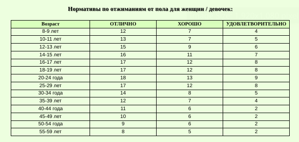

Я начинаю свой путь в мире фронтенд-разработки и это для меня захватывающее время. Когда я впервые задумался о программировании, мне казалось, что это сложно и невозможно для обычного человека. Но, изучив основы, я понял, что это увлекательное и динамичное направление, которое может подарить мне массу возможностей. Мой путь начался с изучения HTML и CSS. Я понял, что эти два языка — это основа любой веб-страницы. HTML помогает создать структуру, а CSS — это то, что делает страницу красивой и удобной для пользователя. Я изучал различные теги HTML, работал с формами, списками, изображениями, а также учился стилизовать элементы страницы с помощью CSS. Сначала казалось, что это всё просто, но по мере углубления в тему я начал сталкиваться с различными нюансами и сложностями, которые требовали более глубокого понимания. Затем я перешел к изучению JavaScript. На тот момент я знал, что без этого языка нельзя создать полноценную динамическую страницу. JavaScript позволяет взаимодействовать с пользователем, изменять контент на странице без её перезагрузки, а также создавать различные интерактивные элементы, такие как кнопки, модальные окна и формы. Моя первая задача была связана с созданием простых скриптов, например, салидация форм и обработка событий кликов. Изучая фронтенд, я столкнулся с такими инструментами, как Git и GitHub. Я понял, что эти инструменты нужны для управления версиями кода, чтобы можно было легко возвращаться к предыдущим версиям, а также работать в команде. На первых порах мне было сложно разобраться в терминах и концепциях Git, но со временем я научился использовать его для своих проектов. Это стало неотъемлемой частью моего рабочего процесса. На данный момент я освоил основы, но понимаю, что фронтенд-разработка — это огромная область, которая включает в себя не только базовые технологии, но и фреймворки и библиотеки, такие как React, Vue и Angular. Я активно изучаю React, потому что это один из самых популярных инструментов для создания современных веб-приложений. Мне нравится его подход к созданию компонентов, что позволяет легко управлять состоянием приложения и повторно использовать код. Не могу не упомянуть и об опыте работы с инструментами для сборки, такими как Webpack, а также с различными методологиями разработки, например, BEM для стилизации. С каждым проектом я чувствую, как мои навыки растут, и это вдохновляет меня двигаться дальше. Но, конечно, на пути новичка всегда встречаются трудности. Бывают моменты, когда код не работает, как ожидалось, или что-то непонятно в документации. В такие моменты важно не сдаваться, а искать решения, обращаться за помощью на форумы или к коллегам. Мне очень помогли онлайн-курсы, документация и поддержка сообщества разработчиков. В будущем я хочу развиваться в сторону full-stack разработки и изучать бэкэнд-технологии, чтобы создать полноценные веб-приложения. Я также заинтересован в тестировании кода, улучшении производительности веб-сайтов и работе с различными API. Для меня фронтенд — это не просто работа, это искусство создавать удобные и красивый интерфейсы, которые делают жизнь пользователей проще и приятнее. Я горжусь тем, что выбрал этот путь, и уверен, что впереди меня ждёт много интересных проектов и возможностей для роста.
Refat: